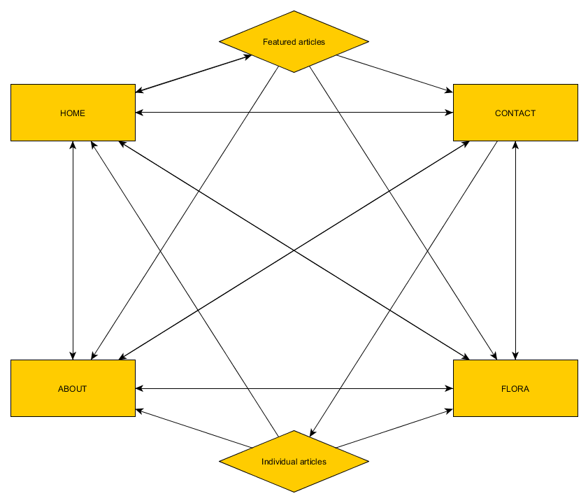
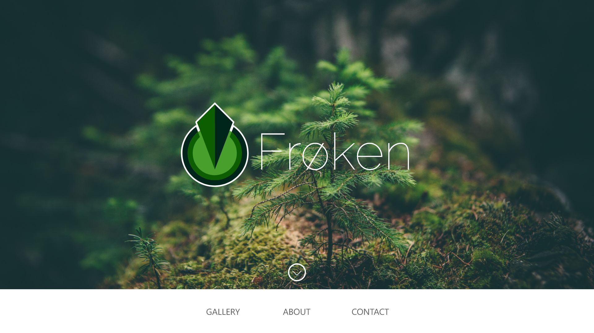
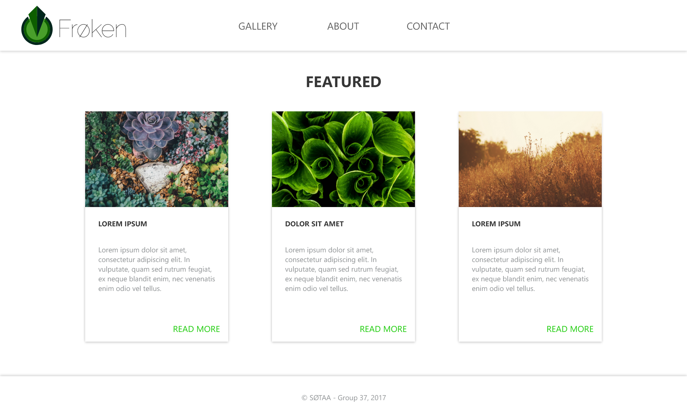
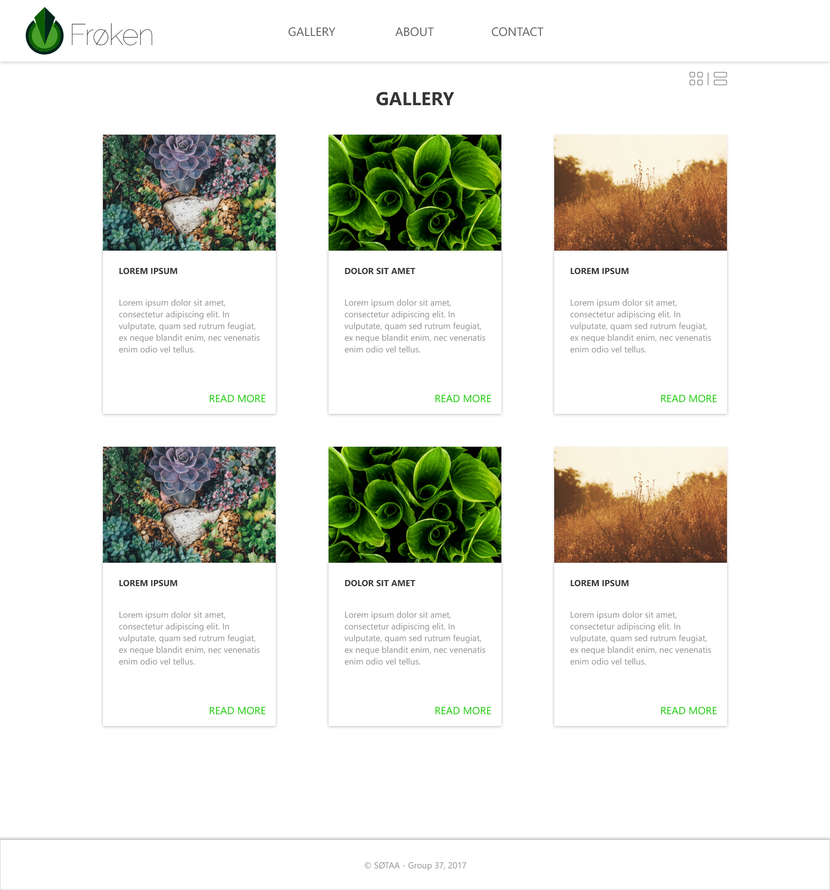

- Client name: Frøken
- Website Name: Frøken
- Contact person: Fictional
- Type of company: Seed distributor
The purpose of the site is to provide information about different types of seeds that the distributor offers, and the flowers that grow out of these seeds. It´s also supposed to be a mean to provide people whit the information they need in their daily business with Frøken.
<<<<<<< HEADOur goal is to peak the users interest in the products Frøken provides, through a sleek and effective designed website.
=======Our goal is to peak the users interest in the products Frøken provides, through a sleek and effective designed website.
>>>>>>> fa1b0be8c02012d76d9ab52b48dfa0842d43ccc3The website has two main targets:
The first target is the partners and (potentials) clients using Frøken in their daily business. As a source of information and inspiration for the flowers themselves and not at least the information they need in their correspondence with Frøken.
The second target is people looking for good information and/or inspiration when it comes to the flowers themselves. They might try to identify a flower, or wonders how to treat it, so it grows.
Every page will have the same navbar, which will point to the main pages (Home, Gallery/Flora, About and Contact). Besides that, the home page will feature three articles, and the Flora page will contain all articles.
One of the requirements set by Frøken is that the site should be fast and easy to navigate. To achieve this the page is given a structure making it possible to reach any page with a maximum of 3 clicks.
=======Every page will have the same navbar, which will point to the main pages (Home, Gallery/Flora, About and Contact). Besides that, the home page will feature three articles, and the Flora page will contain all articles.
One of the requirements set by Frøken is that the site should be fast and easy to navigate. To achieve this the page is given a structure making it possible to reach any page with a maximum of 3 clicks.
>>>>>>> fa1b0be8c02012d76d9ab52b48dfa0842d43ccc3 The idea behind the visuals of the design are founded in keeping things simple and clean. This will lend to the goal of the client, which is to provide easy access to information to potential clients and buyers, as well as the casual user.
The decisions we made for the site layout were based on an idea of a modern, garden-themed webpage. Therefore, the background color is a modern white (#ffffff). Following the garden-theme we will use green colors to promote exactly that feeling. Links (not those in the navbar) and buttons will be colored in green (#25CE13). We want to make the page easy on the eyes, that's why we will reduce the contrasts between content, and text will hence be in light gray (#95989A) for lighter text, and darker gray (#444444) for darker text.
Almost 6 million webpages cannot be wrong. That's why we will use Raleway as our elegant sans-serif font, directly from the Google API. To really make the content pop, we will use a 3px dropshadow with a 6px blur on relevant content (cards, buttons, footer, etc). Our navbar will be on the top of the page content (below the image slideshow on the index page). It will not be sticky, and it will have dropshadow on the bottom. The footer will be on the bottom, with dropshadow on the top. Buttons will as stated before be colored in green (#25CE13), and the text will be white (#ffffff).
As can be seen on the mockup, we will have a slideshow of relevant images with the company's logo in the front.
The home page the first page you get to when you visit the site. At first, you hit the logo, a big background image and the main menu. But if you hit the down-arrow you´ll get a brief overview of news or featured content, where company will have an opportunity to showcase its latest news and highlights.
The home page is the first page you get to when you visit the site. At first you hit the logo, a big background image and the main menu. But if you hit the down-arrow you´ll get a brief overview of news or featured content, where the company will have an opportunity to showcase its latest news and highlights.
 <<<<<<< HEAD  ======= >>>>>>> fa1b0be8c02012d76d9ab52b48dfa0842d43ccc3The card based structure will give the user a good overview over navigation options without flooding the screen with text based information. The pictures on the cards will be a medium through which the user visually decide which flower they want further information on. By using a simple white background, the cards become a larger contrast, and draws the attention of the user.
As well as the photos, the cards will also contain a short text with information about the seeds/flowers. When a card is clicked upon, it will take the user to a separate page where one can see the extended information.
=======The card based structure will give the user a good overview over navigation options without flooding the screen with text based information. The pictures on the cards will be a medium through which the user visually decide which flower they want further information on. By using a simple white background, the cards become a larger contrast, and draws the attention of the user.
As well as the photos, the cards will also contain a short text with information about the seeds/flowers. When a card is clicked upon, it will take the user to a separate page where one can see the extended information.
>>>>>>> fa1b0be8c02012d76d9ab52b48dfa0842d43ccc3This page shows all of the different flowers/seeds the company has for sale. The cards will as previously stated, be generated through JSON. This makes for a dynamic, responsive webpage. The amount of seeds posted here will be a reasonable amount, so that the page won't be really long. The images for the seed previews will be smaller versions of the ones on the actual pages, in order to reduce loading times.
Frøken has a proud legacy, and wants somewhere to show off who they are, and how they got there. This will be the “About” page. It will contain a brief history of the company. Its key achievements and the companies vision.
=======Frøken has a proud legacy, and wants somewhere to show off who they are, and how they got there. This will be the “About” page. It will contain a brief history of the company. Its key achievements and the companies vision.
>>>>>>> fa1b0be8c02012d76d9ab52b48dfa0842d43ccc3This is where users can initiate “first contact” with Frøken. When someone click the contact page they´ll get a page whit the basic contact information for Frøken. There will also be a form where you can leave your contact information and enquiry, so the Frøken staff can get back to you as fast as possible.
=======This is where users can initiate “first contact” with Frøken. When someone click the contact page they´ll get a page whit the basic contact information for Frøken. There will also be a form where you can leave your contact information and enquiry, so the Frøken staff can get back to you as fast as possible.
>>>>>>> fa1b0be8c02012d76d9ab52b48dfa0842d43ccc3<<<<<<< HEAD We will use 4 different JavaScript scripts on our page. Those are:
======= We will use 4 different JavaScript scripts on our page. Those are: >>>>>>> fa1b0be8c02012d76d9ab52b48dfa0842d43ccc3